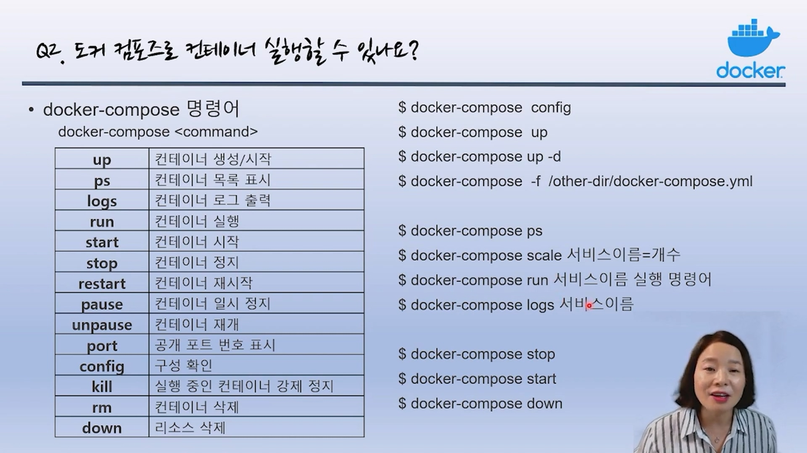

Docker Compose
도커 컴포즈란?
- 여러 컨테이너를 일괄적으로 정의하고 실행할 수 있는 툴.
- 하나의 서비스를 운영하기 위해서는 여러 개의 애플리케이션이 동작해야 함
- 컨테이너화 된 애플리케이션들을 통합 관리 할 수 있다.
- Yaml파일 형식으로 관리
도커 컴포즈 설치
Install the Compose standalone
On this page you can find instructions on how to install the Compose standalone on Linux or Windows Server, from the command line. Compose standalone Note that Compose standalone uses the -compose syntax instead of the current standard syntax compose. For example type docker-compose up when using Compose standalone, instead of docker compose up.
curl -SL https://github.com/docker/compose/releases/download/v2.12.2/docker-compose-linux-x86_64 -o /usr/local/bin/docker-compose
ls -l /usr/local/bin/docker-compose
sudo chmod +x /usr/local/bin/docker-compose
#버전확인
docker-compose versionyaml 명령어
- version
- compose 버전. 버전에 따라 지원 문법이 다름
- verson “2” (현재 3.9까지 있음)
- services
- 컴포즈를 이용해서 실행할 컨테이너 옵선을 정의
- service:
webserver:
image: nginx
db:
image: redis
- build
- 컨테이너 빌드
- webapp:
build: .
- image
- compose를 동해 실행할 이미지를 지정
- webapp:
image: centos:7
- command
- 컨테이너에서 실행될 명렁어 지정
- app:
image: node:12-alpine
command: sh -c “yarn instal && yarn run dev”
- port
- 컨테이너가 공개하는 포트를 나열
- webapp:
image: httpd:latest
port:
- 80
- 8443:443
- link
- 다른 컨테이너와 연계할 때 연계할 컨테이너 지정
- webserver:
image: wordpress:latest
link:
db:mysql
- expose
- 포트를 링크로 연계된 컨테이너에게만 공개할 포트
- webapp:
build: .
- volumes
- 컨테이너에 볼륨을 마운트
- webapp:
image: httpd
volumes:
- /var/www/html
도커 컴포즈로 동작시키는 웹서버
- 1단계 : 서비스 디렉토리 생성
mkdir composetest
cd composetest
- 2단계 : dockerfile 작성
#app.js 파이썬 파일 작성
import time
import redis
from flask import Flask
app = Flask(__name__)
cache = redis.Redis(host='redis', port=6379)
def get_hit_count():
retries = 5
while True:
try:
return cache.incr('hits')
except redis.exceptions.ConnectionError as exc:
if retries == 0:
raise exc
retries -= 1
time.sleep(0.5)
@app.route('/')
def hello():
count = get_hit_count()
return 'Hello World! I have been seen {} times.\n'.format(count)
#requirements.txt 생성
flask
redis
#dockerfile생성
FROM python:3.7-alpine
WORKDIR /code
ENV FLASK_APP=app.py
ENV FLASK_RUN_HOST=0.0.0.0
RUN apk add --no-cache gcc musl-dev linux-headers
COPY requirements.txt requirements.txt
RUN pip install -r requirements.txt
EXPOSE 5000
COPY . .
CMD ["flask", "run"]
- 3단계 : docker-compose.yml 생성
cat > docker-compose.yml
version: "3.9"
services:
web:
build: .
ports:
- "8000:5000"
redis:
image: "redis:alpine"
- 3단계 : docker-compose 명령어
{kind=link}

출처 : 유튜브 따배런 따배도 https://www.youtube.com/@ttabae-learn# 실행(백그라운드 모드로)
docker-compose up -d
# 도커 컴포즈로 만든 프로세스 조회
docker-compose ps
# 스케일 아웃
docker-compose scale mysql=2
docker-compose ps
# rm명령어처럼, 완전히 종료
docker compose down